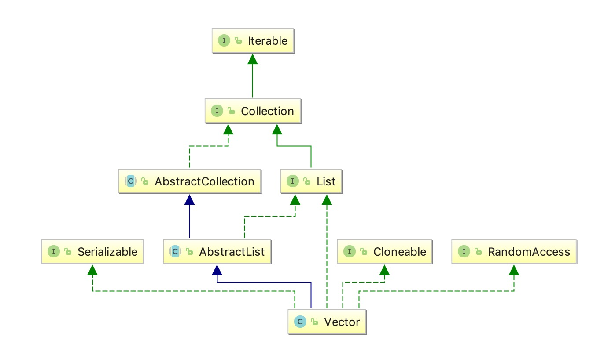

一、类关系图

Vector实现同ArrayList差不多，方法里多了synchronized进行同步。
二、源码分析
初始化
|
|
1.Vector是基于数组（Object[] elementData）实现的
2.capacityIncrement是扩容指定增量
3.默认容量是10
添加元素
|
|
1.首先判断当if (minCapacity - elementData.length > 0)容量大于初始容量时候会进行扩容
2.如果没有指定capacityIncrement，每次扩展为原来的两倍int newCapacity = oldCapacity + ((capacityIncrement > 0) ?
capacityIncrement : oldCapacity);
3.通过Arrays.copyOf(elementData, newCapacity);把原数组复制给新数组，因为这个操作代价高所以建议初始化时候就给对象大概容量大小，减少扩容次数
获取元素
|
|
1.看源码很简单，获取指定下标数组元素
移除元素
|
|
1.原理同ArrayList移除元素，详见ArrayList源码分析
获取数量
|
|
获取元素下标
|
|
fail-fast机制
1.详见ArrayList源码分析fail-fast部分